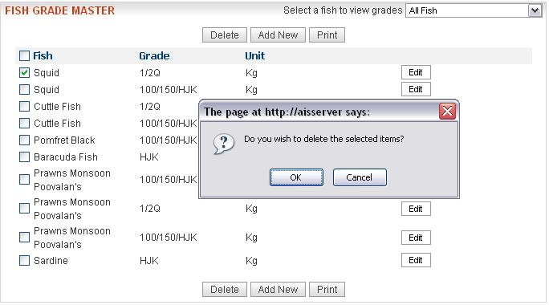

| View Fish-Grades | ||
| Add Fish-Grade Entry | ||
| Edit Fish-Grade Entry | ||
| Delete Fish-Grade Entry | ||
| View Fish-Grades | ||
| 1) By default you get entire list of fish-grade entries as shown in the figure. | ||
| 2) You can view the fish-grade entries of the selected fish(First select a fish from the drop down list as shown in the figure.Then you will get the grades of the selected fish). | ||
| Add Fish-Grade Entry | ||
| 1) Click the “AddNew” button.Then you get the following screen: | ||
| 2) Select a fish from the drop-down list. | ||
| 3) There are two options for selecting a grade : Option 1) Select the grade from the drop-down list. OR Option 2) Copy from the fish-grade entries for the selected fish(fish can be selected from the drop-down list).(as shown in figure) |
||
| 4) Click the Add button.You will be prompted for a confirmation.Click on the Ok button.The newly added entry will be visible in theFishGradeMaster list . | ||
| Edit Fish-Grade Entry | ||
| 1)Click the "Edit" button .Then you get the following screen: | ||
| 2) You can edit the fish name and grade. | ||
| 3) Click on the "Save Changes" button.You will be prompted for confirmation.Click on the Ok button.The changes will be visible in the FishGradeMaster list . | ||
| Delete Fish-Grade Entry | ||
| 1) You can select more than one entries by selecting the checkboxes for deletion. | ||
| 2) Click the Delete button.You will be prompted for confirmation.(as shown below): | ||
|  | ||
| Click on the Ok buton.The selected entry(entries) will be removed from the FishGradeMaster list . | ||